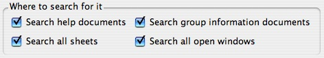
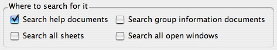

Main window (Group Library)
This page documents the first window that first opens after Group Explorer's splash screen closes, the window from which all other windows are opened.
Data in the group table
To change which columns are present in the table, see below.
| To learn more about any group in the table, simple double-click it. This opens its Group Info window, which contains everything Group Explorer knows about the group, and is the launchpad for exploring the group. To ask for explanation about the contents of an individual cell in the main group table, right-click the cell and choose "Explain this" from the menu that appears. |
The groups that are loaded by default are all groups that come with the software, are of order less than or equal to 60, and whose size on disk is smaller than 125 kilobytes. The reason for these restrictions is to speed up the loading of the software while still allowing the user to retain copies of large groups for occasional use. If all groups were loaded at startup and the user had several large groups on disk, starting Group Explorer could take several minutes. Thus only small groups are loaded by default. You can change these options, of course. Note that computations are done upon startup that, for very large groups, may take a great deal of time; you are forewarned.
You can customize the table in the main window in many ways. Let's examine them from the most common (and simplest) to the least.
Reordering and resizing
To reorder the columns in the group table, hold the Control (or Command on Mac OS) key and drag a column's header to the left or right. Release when you have the column in the new position. Reordering the rows in the table can be done the same way, Control- (or Command-) dragging the row headers up and down. You can also reorder the rows in the table by clicking a column header to sort by it. Clicking again on the same header reverses the sort.
You can resize the rows or columns by dragging the boundary of the row's or column's header. You will be cued in to the fact that this option is available by noticing how your mouse cursor changes when you hover it over the boundary of a row or column header.
Adding and removing columns
| The default columns are not the only pieces of information available about a group. To show more information in the group table, right-click on a column header and you will see a menu. The first item on the menu hides the column on whose header you clicked. But you can also choose to show any of the columns that are not currently visible. Any of these columns whose names are not self-explanatory are explained in the Group Explorer terminology page. Also, the last choice on the menu is to create a new column. When creating a new column, you can choose its name and fill it with any data you please. |
 |
If the column on whose header you clicked was a column that you had created, another menu option will be visible, one for erasing the column. Columns which you erase can only be restored by using the "undo" option on the Edit menu. Once you have quit Group Explorer, deleted columns are forever lost. Otherwise, data in columns you have created (as well as all your selections about which columns are visible, and column and row positions) are stored in your personal configuration file, and are preserved across runs of Group Explorer. Because a single settings file is used, it would be inadvisable to open more than one instance of Group Explorer at a time.
Toolbar and menu
The File menu
New sheet... 
Creates a blank sheet of size 500x500. For information on working with sheets, refer to the help page for sheets.
Open... 
Provides you with a window for choosing a sheet file from your computer for Group Explorer to load. Group Explorer expects such files to end with the extension .sheet. If you select a valid sheet file, it will be opened in a new window. For information on working with sheets, refer to the help page for sheets.
Save settings 
Flushes the settings file out to the disk. Group Explorer does this every time it closes anyway, but if for some reason you think your computer is going to crash and you want to be sure your data is saved first, you can save it at any time with this command.
The Edit menu
Copy table selection 
Copies to the clipboard a section of HTML text describing a table that looks like the selected portion of the group table. This may be one cell (the last one you clicked, which has a darker border than the others) or a range of cells (if you clicked and dragged, highlighting a rectangular portion of cells). Because the format is HTML, no images will be embedded in the data. If you need to copy images, you will need to open them one at a time and copy them from their large visualizers.
Search/find...
Opens Group Explorer's search window, with all searchable locations active, as shown here.

For more help on the search window, refer to the help page for searching.
Undo 
Any action taken in the main window (i.e. all actions described on this page--rearranging columns and rows, creating columns, sorting) as well as changes in preferences can be undone by clicking this button on the toolbar or choosing it from the Edit menu. Note that hovering your mouse over it will describe in the main window's status bar what you are about to undo.
Redo 
Any action undone can be redone with this button (or menu item). As with Undo, hovering your mouse will describe in the main window's status bar what you are about to redo.
The Help menu
User Manual 
You are currently reading a page of the user manual. Clicking this button (or using the menu item) will open a help window at the table of contents for the User Manual. Note that the user manual is not all of the Group Explorer documentation; it is simply the reference part. But every page in the documentation has quick links at the bottom for getting to commonly-used places, like Getting Started, Help on help, etc.
Tutorials 
Clicking this button (or using the menu item) will open a help window at the table of contents for the Group Explorer Tutorials. The tutorials are a good complement to the reference documentation of the user manual. As mentioned above, every page in the documentation has quick links at the bottom for getting to commonly-used places, like Getting Started, Help on help, etc.
Search help...
Opens Group Explorer's search window, with only the checkbox for searching the help documentation active, as shown here.

For more help on the search window, refer to the help page for searching.
The "What's this?" button 
The "What's this?" button appears on the toolbar of the main window, and has its own separate help page here.
Quick help links:
Contents | Getting Started | Tutorials | User Manual | Miscellaneous Reference
GE terminology | Help on help